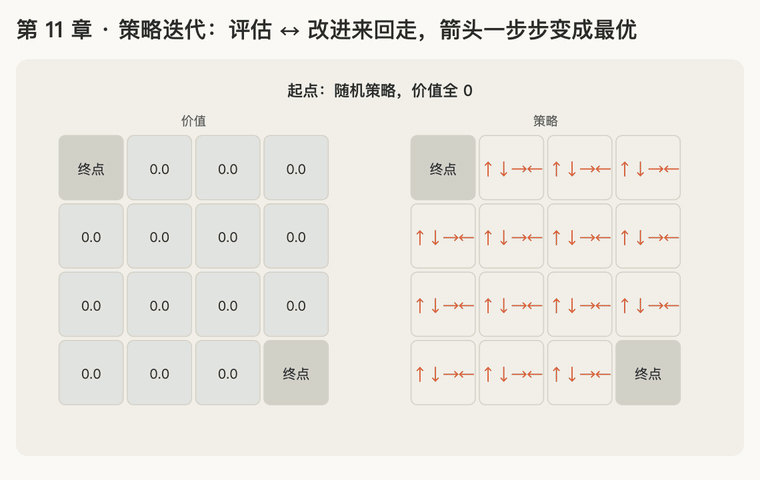

第 11 章 · 策略改进与策略迭代：评估一下，改一改，再评估
本地运行
git clone https://github.com/wikieden/rl-from-scratch
cd rl-from-scratch/code/notebooks
pip install jupyterlab torch numpy
jupyter lab ch11_policy_iteration.ipynb也可以下载后直接用 VS Code 打开 .ipynb 运行。需要 GPU 的章节在 Colab 里选「代码执行程序 → 更改运行时类型 → GPU」。
本章回答：知道了一份策略的价值，怎么得到一份更好的策略？反复"评估 → 改进"，为什么一定会走到最优？
讲解日期：2026-11-13 · 上一章：第 10 章 策略评估 · 下一章：第 12 章 价值迭代与 GPI
对应原文：Sutton & Barto §4.2 Policy Improvement（L5618–L5881，式 4.6–4.9，策略改进定理）、§4.3 Policy Iteration（L5882–L6152，算法框 L5918）
本章缩写：π'（读"π 撇"）：改进后的新策略；argmax 见第 9 章；PI = Policy Iteration（策略 / 迭代）。全部缩写见 附录 · 缩写与术语表
讲解
第一步：只改一个状态的动作，值不值？看 q（2026-11-13）
问题：手上有一份策略 π，也算出了它的价值 \(v_\pi\)（第 10 章）。在某个状态 s，如果只这一步换个动作 a，之后还按 π 走，会更好吗？
"先做 a、之后按 π 走"的价值，正是第 7 章的 \(q_\pi(s, a)\)（式 4.6，L5716–L5722）：
判断标准（L5726–L5729）：如果 \(q_\pi(s, a) > v_\pi(s)\)，也就是"这一步换成 a"比"照旧按 π"平均更好，那以后每次到 s 都选 a，整份策略都会变好。
类比：上班路线。 你每天按习惯的路线走（策略 π），平均 40 分钟（\(v_\pi\)）。某天在第一个路口试着右转，之后照旧走，结果 35 分钟（\(q_\pi\)）。那以后到这个路口都右转，总时间只会更短。
一句话：在 s 换成动作 a 值不值，就比 \(q_\pi(s, a)\) 和 \(v_\pi(s)\)；更大就换。
第二步：每个状态都挑 q 最大的：贪心改进（2026-11-13）
把第一步推广到所有状态：每个状态都挑 \(q_\pi(s, a)\) 最大的动作，得到新策略 π'（式 4.9，L5824–L5836）：
这叫对 \(v_\pi\) 贪心 greedy（第 9 章第三步对 \(v_*\) 贪心，这里对的是当前策略的 \(v_\pi\)）。
策略改进定理 policy improvement theorem（L5730–L5747，式 4.7、4.8）：这样得到的 π' 一定不比 π 差，每个状态都满足 \(v_{\pi'}(s) \ge v_\pi(s)\)。
直觉：在每个状态，π' 都选了"至少和 π 一样好"的动作（max 一定 ≥ 平均）。处处不差，整体当然不差。
用 4×4 网格试一下（例 4.1，图 4.1 右列）：拿第 10 章随机策略的最终价值（0、−14、−20、−22 …），每格往四个方向看一步，挑"−1 + 邻居价值"最大的：
终 ← ← ↓←
↑ ↑← ↓← ↓
↑ ↑→ ↓→ ↓
↑→ → → 终
（并列最优的方向都画上了。）只贪心改进了一次，箭头就已经全部指向最近的终点：这正是最优策略。例 4.1 很简单，一次就到位；一般情况要多来几轮。
一句话：每个状态挑 \(q_\pi\) 最大的动作，得到的新策略处处不比原来差（策略改进定理）。
第三步：改了再评估，评估了再改：策略迭代（2026-11-13）
新策略 π' 有了，它的价值 \(v_{\pi'}\) 又变了。拿新价值再贪心一次，可能又能改进。于是轮流做（§4.3，L5882–L5917）：
什么时候停：改进以后策略一点都没变，就停。
为什么停下来就是最优（L5836–L5855）：策略没变，说明每个状态的 π 已经在挑 \(q_\pi\) 最大的动作，也就是
这正是第 9 章的 Bellman 最优方程。最优方程只有一个解 \(v_*\)，所以 \(v_\pi = v_*\)，π 就是最优策略。
为什么一定会停（L5908–L5912）：有限 MDP 的确定性策略只有有限多种（每个状态选一个动作），每一轮要么严格变好、要么停下，不会绕圈，所以有限轮内一定结束。
跑出来：
| 环境 | 策略迭代几轮停下 | 结果 |
|---|---|---|
| 4×4 网格（例 4.1） | 3 轮（最后一轮是"确认没变"） | 价值 0、−1、−2、−3 …（离最近终点几步） |
| 5×5 网格（例 3.5） | 5 轮 | \(v_*(A) = 24.4\)，和第 9 章一样 |
一句话：策略迭代 = 评估 → 贪心改进 → 评估 → …，策略不再变就停，停下时满足最优方程，就是最优。
第四步：每轮都要等评估算完：太慢了？（2026-11-13）
问题：策略迭代每一轮都要完整做一次第 10 章的策略评估（4×4 网格要 200 多轮小循环），才能改一次策略。
观察：回到第二步，评估只算了一部分、价值还没准的时候，贪心出来的策略往往已经是对的了。例 4.1 的图 4.1 右列显示：k = 3 时贪心策略就已经是最优的，后面 250 多轮评估对"改策略"没有任何帮助。
所以有个想法：评估不用算到底，算几轮就改一次策略。极端一点：评估只算一轮就改。这就是下一章的价值迭代。
| 评估算到底 | 评估只算一轮 | |
|---|---|---|
| 名字 | 策略迭代（本章） | 价值迭代（第 12 章） |
| 每轮的代价 | 大 | 小 |
| 要几轮 | 少（4×4：3 轮） | 多一些，但每轮便宜 |
一句话：策略迭代每轮都要把评估算到底，其实评估没算完时贪心策略常已经对了，所以有了下一章"评估一轮就改"的价值迭代。
动画演示：评估 ↔ 改进来回走，箭头一步步变成最优

可交互版：animations/l11-policy-iteration.html（要能点按钮、拖滑块，需要用本地服务打开，见 animations/README.md"跑起来看"）。
怎么看：
- 左边是价值（颜色），右边是策略（箭头）；
- "评估"阶段：价值一轮轮更新，箭头不动（第 10 章）；
- "改进"阶段：每格往四邻看一步，箭头换成 q 最大的方向（第二步）；
- 交替几次后，改进完箭头不再变，提示"已停下：满足最优方程"（第三步）；滑块"评估几轮就改一次"：调到 1 就是下一章的价值迭代。
练习与作答记录
题 1：某状态下 π 选的动作 \(q_\pi = 5\)，另一个动作 \(q_\pi = 7\)，\(v_\pi(s) = 5\)。按第一步，该不该换？换了以后这个状态的价值会变小吗？
作答：（待作答）
题 2：4×4 网格的第一张贪心箭头图里，第 1 行第 4 列（右上角）画着"↓←"两个方向。为什么两个都是最优？（提示：看它左边和下边两格的价值。）
作答：（待作答）
题 3：策略迭代"改进以后策略不变"时为什么就是最优？用第三步的两句话复述。
作答：（待作答）
口诀
换不换看 q：q 比 v 大就换；
每格挑 q 最大，新策略处处不输（改进定理）；
评估、改进、再评估，策略不变就停，停下就是最优；
评估不必算到底，下一章只算一轮。
本章复习卡片
- R18（策略改进：\(\pi'(s) = \arg\max_a q_\pi(s, a)\)；策略改进定理）
- R19（策略迭代的流程；为什么"策略不变"就是最优）
附录 · 延伸阅读
留给以后深入学习用，不影响本章主线。★ 是建议先读的。L 行号指
materials/text/books/sutton-barto-RLbook2020.txt。
推荐阅读
| 读什么 | 读哪里 | 读它为了什么 |
|---|---|---|
| ★ Sutton & Barto §4.2 | L5618–L5881（式 4.6–4.9、策略改进定理及证明 L5730–L5790） | 本章第一、二步 |
| ★ Sutton & Barto §4.3 | L5882–L5917（算法框 L5918；"往往几轮就收敛" L6118） | 策略迭代的完整算法 |
| Sutton & Barto 例 4.2 | L5955 起（Jack 的租车问题，图 4.2） | 策略迭代在一个更大问题上的表现：4 轮收敛 |
| Sutton & Barto 习题 4.4 | L6125 | 并列最优动作时策略迭代可能"来回换"永不停的 bug，以及怎么修 |
| CS 285 第 7 讲 | lec-07.txt（Value-Based RL）开头 |
课程版：policy iteration → value iteration → fitted Q-iteration 的演化 |
数学原理
- 策略改进定理：若对所有 s 有 \(q_\pi(s, \pi'(s)) \ge v_\pi(s)\)，则对所有 s 有 \(v_{\pi'}(s) \ge v_\pi(s)\)。证明是把 \(v_\pi(s) \le q_\pi(s, \pi'(s))\) 一层层展开（L5753–L5790），每展开一层就多一步按 π' 走。
- 最优性：改进后不变 ⇔ \(v_\pi\) 满足 Bellman 最优方程 ⇔ \(v_\pi = v_*\)。
- 有限步收敛：确定性策略共 \(|\mathcal A|^{|\mathcal S|}\) 种，单调改进不会重复，所以有限步结束；实际上通常几轮就停。
- 并列的处理：argmax 有并列时要固定一种挑法（比如编号最小的），否则可能在两个一样好的策略之间来回换、判断不出"不变"（习题 4.4）。本章代码把并列动作平分概率，比较的是整张概率表。
公式清单
| 公式 | 意思 |
|---|---|
| \(q_\pi(s, a) = \sum_{s', r} p\,[r + \gamma v_\pi(s')]\) | 只这一步换成 a（式 4.6） |
| \(q_\pi(s, \pi'(s)) \ge v_\pi(s)\ \forall s \Rightarrow v_{\pi'}(s) \ge v_\pi(s)\ \forall s\) | 策略改进定理（式 4.7、4.8） |
| \(\pi'(s) = \arg\max_a q_\pi(s, a)\) | 贪心改进（式 4.9） |
| \(\pi_0 \to v_{\pi_0} \to \pi_1 \to \cdots \to \pi_*\) | 策略迭代 |
代码对照：把本章的数字用代码算一遍
代码在
cs285-deep-rl/solutions/chapter-code/ch11_policy_iteration.py，测试tests/test_ch10_16.py。
同一章的 Jupyter notebook：cs285-deep-rl/solutions/chapter-code/notebooks/ch11_policy_iteration.ipynb（讲解和代码放在一起，一格一格边读边跑；代码都写在格子里，Colab 也能直接打开）。
bash cd cs285-deep-rl/solutions/chapter-code uv run python ch11_policy_iteration.py
| 讲义 | 代码 | 跑出来 |
|---|---|---|
| 对随机策略贪心一次 | greedy_policy(P, v_rand, 1.0) |
第二步的箭头图 |
| 策略迭代（4×4） | policy_iteration(P, 1.0, policy_evaluation) |
3 轮，价值 0、−1、−2、−3 |
| 策略迭代（5×5） | policy_iteration(G, 0.9, solve_v) |
5 轮，\(v_*(A) = 24.4\) |
关键几行：
while True:
v = evaluate(P, pi, gamma) # 评估（第 10 章，或第 8 章直接解）
new = greedy_policy(P, v, gamma) # 改进：每格挑 q 最大
if new == pi: return pi, v, rounds # 不变就停
pi = new
代码里才看得到的：evaluate 是作为参数传进去的：4×4 用第 10 章的迭代评估，5×5 直接用第 8 章的 solve_v 解方程。策略迭代只要求"能算出 \(v_\pi\)"，用哪种办法都行。
自己改一改（不影响练习答案）：
- 5×5 网格用 γ = 0.5 做策略迭代：
policy_iteration(G, 0.5, solve_v)3 轮就停，\(v_*(A) = 10.323\)；再用show_policy打出箭头，看看远离 A 的格子箭头怎么变了。 - γ = 0.99：5 轮，\(v_*(A) = 204.04\)。策略迭代的轮数几乎不随 γ 变。